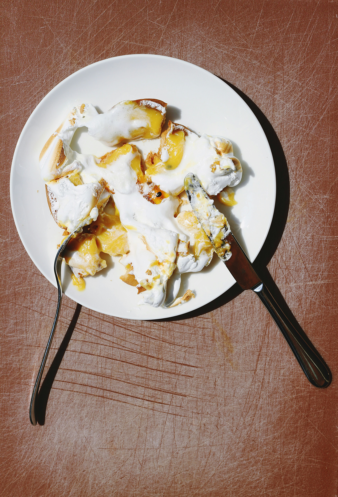

Apple Dump Cake

Home
Description
Apple dump cake is a simple and delicious dessert made with a few basic ingredients. Top it with some vanilla ice cream for an extra treat!
Ingredients
- 2 cans of apple pie filling
- 1 box of yellow cake mix
- 1/2 cup of butter, melted
- 1/2 cup of chopped nuts (optional)
Steps
- Preheat the oven to 350°F (175°C).
- Pour apple pie filling into a 9x13-inch baking dish.
- Sprinkle the cake mix evenly over the pie filling and top it with melted butter. Top with chopped walnuts (optional)
- Bake for 30-35 minutes or until the top starts to turn a golden brown.
- Let cool 15 minutes before serving.